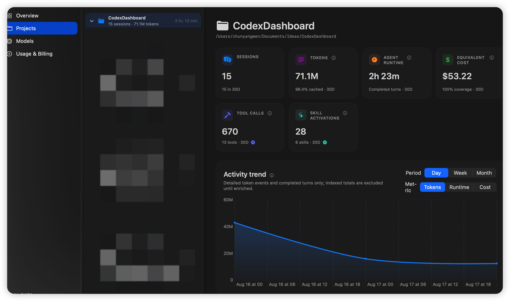
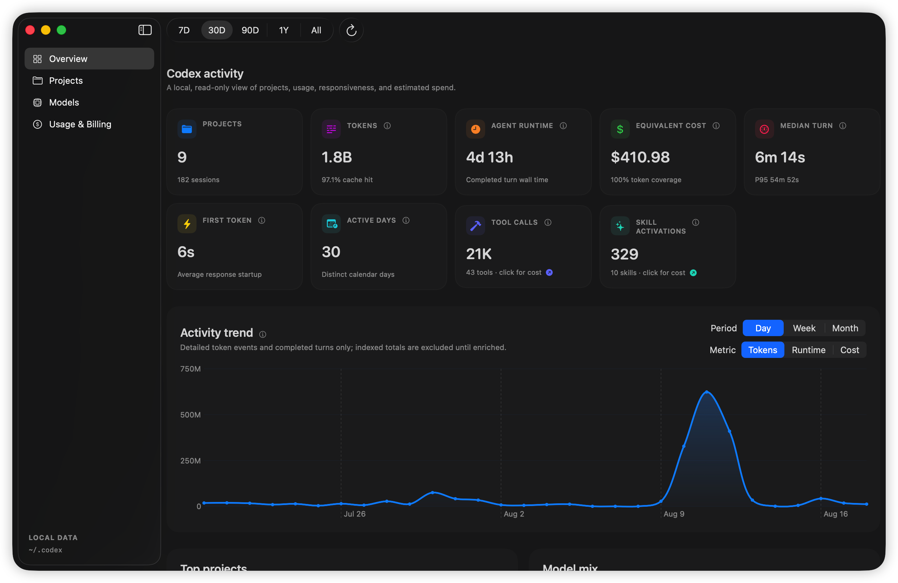
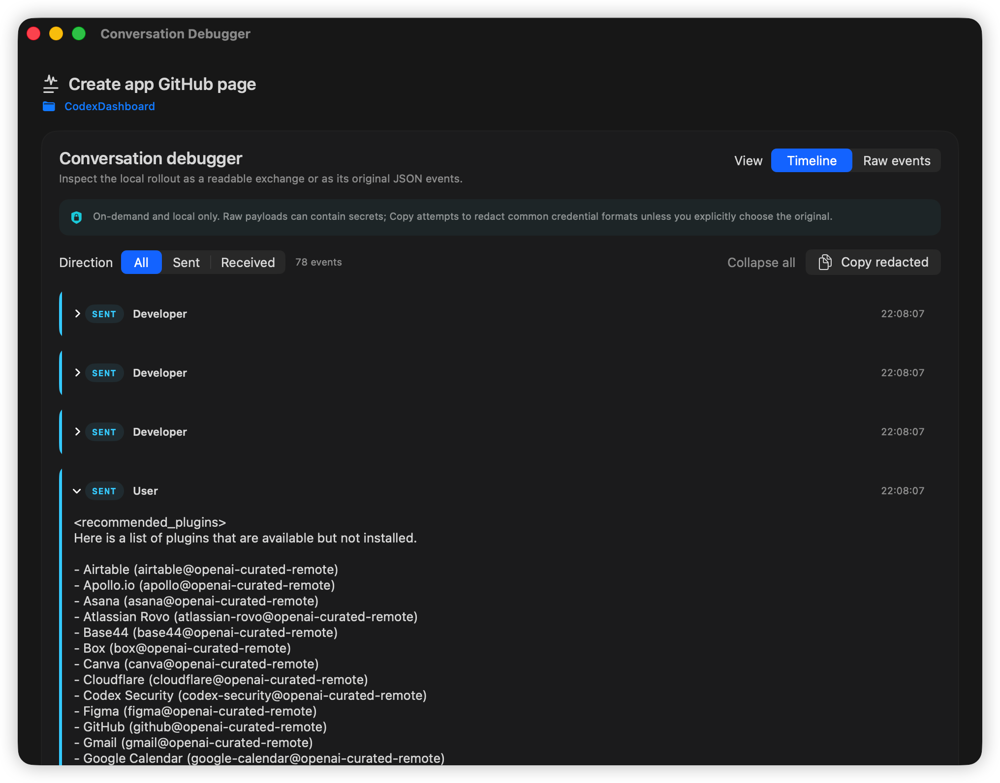
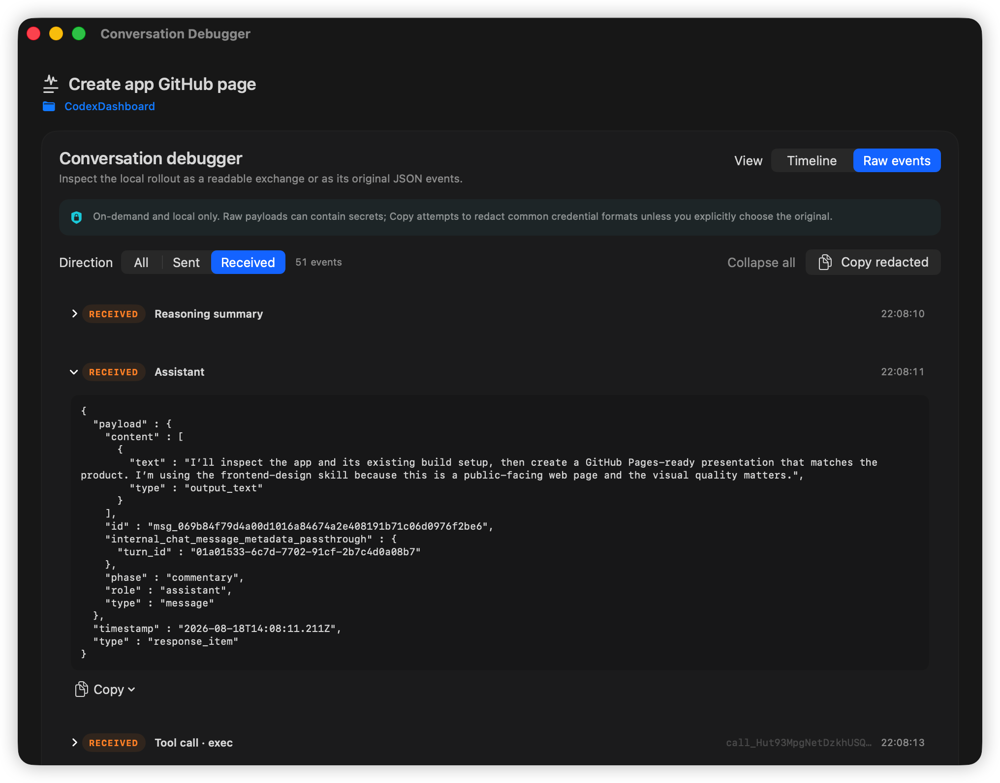
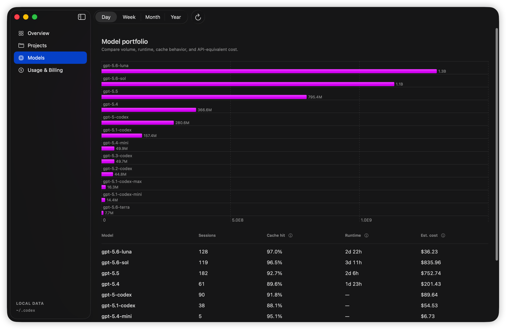

01
Follow every project
Compare workspaces, expand their sessions, and see how activity changes over time.

Understand the work behind the work. Codex Dashboard turns your local activity into a clear view of projects, models, tokens, tools, time, and API-equivalent cost.

Metrics tell you what happened. The debugger shows how it happened—without sending the conversation anywhere.

Follow messages, reasoning summaries, tool calls, and tool results in sequence. Filter the model exchange by direction, then switch to the original JSON to investigate the exact event shape.

Move from your entire Codex history to one project, one session, or one model—without losing the thread.
Compare workspaces, expand their sessions, and see how activity changes over time.

Compare volume, runtime, cache behavior, session count, and estimated cost.

Check remaining quota and today's key metrics right from your menu bar.
Opens your local Codex index read-only and enriches metrics from local rollout files.
Conversation payloads load only when you open the debugger, stay in memory, and are never added to history.
Your durable metrics database lives in Application Support on your Mac.
~/Library/Application Support/CodexDashboard/metrics-v1.sqlite
Requires macOS 14 or later and a Swift 6.1-compatible Xcode toolchain.
$ git clone git@github.com:chunyang-wen/CodexDashboard.git
$ cd CodexDashboard
$ swift run CodexDashboard